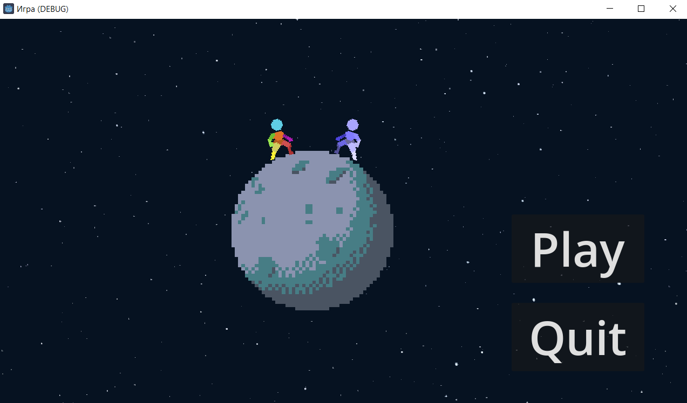
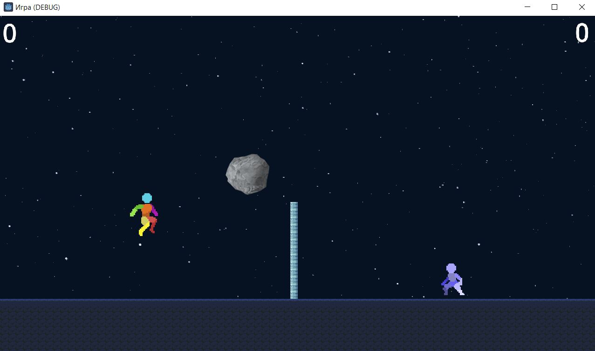

Ссылка на репозиторий - https://github.com/Faris325/-Space-volleyball_2-player

Меню встречает игрока движущимся фоном, крутящейся луной, на которой стоят будущие игроки, а так же 2 кнопками, при нажатии на которые происходят определенные действия необходимые пользователю. При нажатии на кнопку "Quit" происходит выход из игры, пр нажатии на кнопку "Play" происходит начало игры, избраженной снизу.

Описание игры:
Под играющую музыку, 2 персонажа на изображении выше управляются 2 игроками, левый с помощью клавиш "W A S D", правый с помощью "← → ↑ ↓", соотвественно передвигаться они могут по 4 направленям, находясь в воздухе с помощью клавиши "S" или "↓" можно быстро спуститься вниз. Цель игры в том, чтобы мяч оказался на земле противника. Игра закончится в том случае, если кто то наберет 3 очка. Персонажи имеют 3 анимации: бега, прыжка, падения.